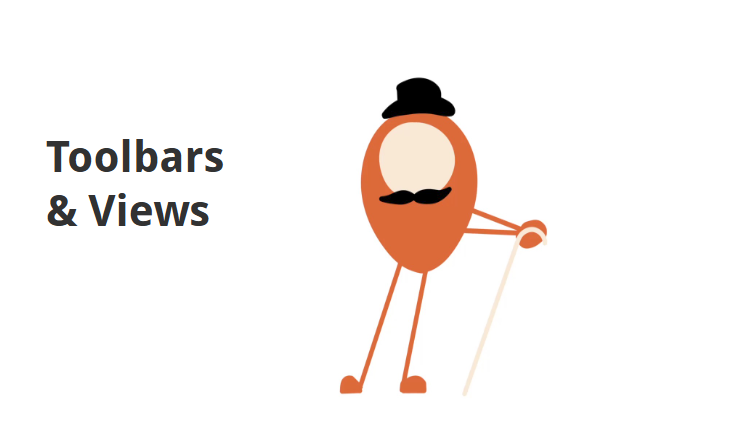
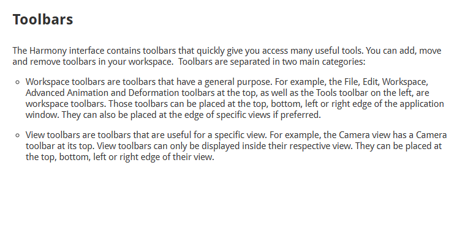

About this Lesson
Now that we already jumped into Harmony with the Fun with Dots activity, it is time to get more technical by exploring how Harmony is set up and explore some of Harmony Premium’s Preferences to improve your animation experience.
Topics
- Pose to Pose: Animation technique drawing key poses first.
- Key Drawing: Visually significant poses.
- Breakdown Drawing: Poses between keys.
Harmony Topics
- User Interface: Familiarize yourself with the workspace.
Step 2
- Open Blob_Animation.xstage.
- Export as YourName_Blob.gif.
- Submit your file below.
Step 3
- Complete the Harmony User Interface & Preferences Quiz.
Congrats, you are one step closer to becoming an animator!
Harmony Toolbars
1 / 4

The Tools Toolbar
2 / 4

The Playback Toolbar
3 / 4

The Timeline View
4 / 4

The Timeline View
Harmony UI Quiz
Question 1 of 21. I enabled Auto-Save which is found in Preferences / General.
2. The Timeline View is used to set the timing of your animation.